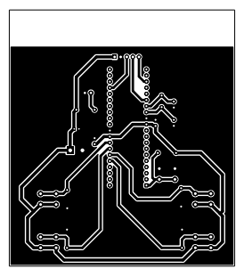
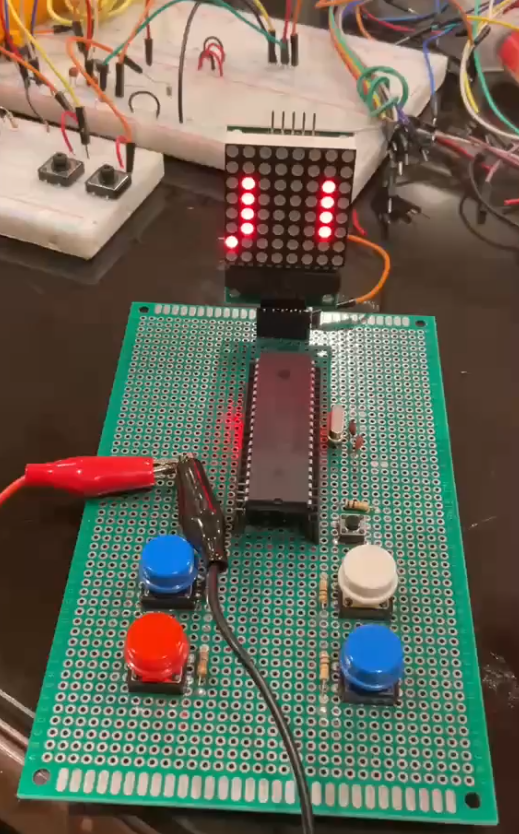

Hardware Collage (2 Photos)Microprocessors, Embedded Systems & PCB Fabrication
PIC16F877A Microcontroller Console & Custom PCB Design
Designed a custom single-layer PCB trace layout and fabricated a standalone PIC16F877A microcontroller hardware prototype. Performed circuit simulation, soldering, and hardware debugging, integrating a crystal oscillator, tactile push-button inputs, and an 8×8 red LED dot-matrix display running real-time interactive game logic.